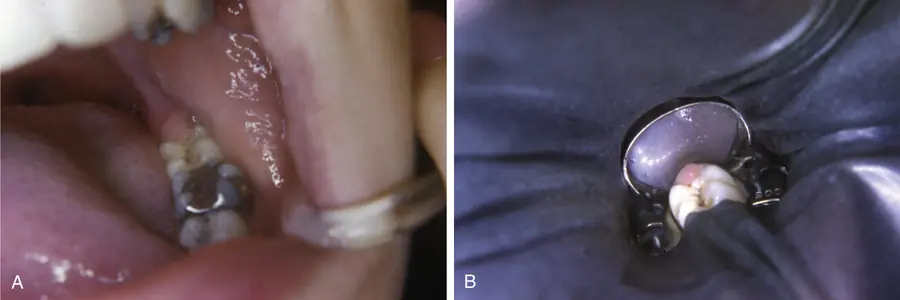
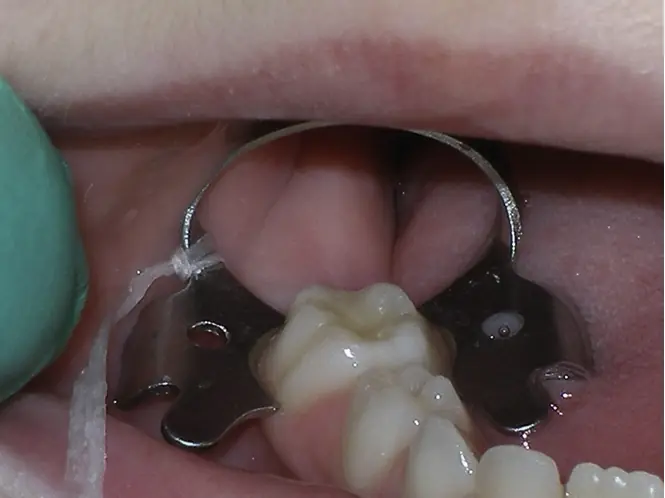

نسخه استخراجشده؛ ترجمه یا تأیید علمی انجام نشده است. وضعیت: captured
دختری ۸ ساله برای ترمیم اکلوزال مولر اول دائمی پایین آمده است. دندان تازه رویش یافته و لثه هنوز بخشی از دیستال تاج را پوشانده. دستیار ورق ۱۵۲ میلیمتری بزرگسال و یک کلمپ مولر معمولی آماده کرده است. چه چیزی را عوض میکنی؟

تاج دندان شیری و دائمی جوان کوتاه است و بیشترین برجستگی آن نزدیک یا زیر لثه است؛ مولر شیری هم گردن تنگ و برجستگی سرویکال آشکاری دارد. پس فک کلمپ باید بیشتر رو به لثه باشد تا زیر بیشترین برجستگی بنشیند. کلمپی که محکم ننشیند، با کشش ورق بیرون میپرد.

شمارهها میان سازندهها فرق دارد و حرف A بهتنهایی معنای ثابتی ندارد؛ شکل فک را ببین.
اشتباه رایج: کلمپ مولرِ بزرگسال روی مولر دائمی تازهرویش. فکها روی بیشترین برجستگی میمانند و کلمپ با نخستین کشش ورق بیرون میپرد.
نوع سؤال: ساخت کلمه · 4 خانه
حروف منبع: ر · ی · ی · ش